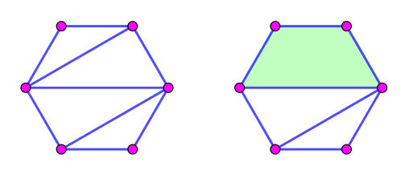
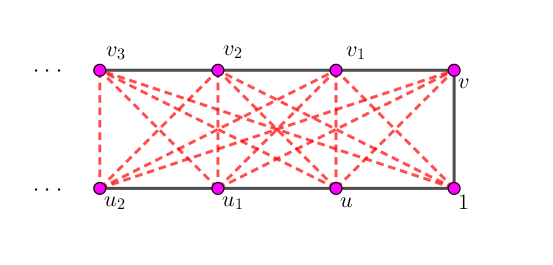
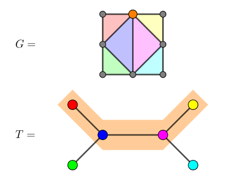

前置技能：图论概念梳理。
论文地址：《弦图与区间图》。
对无向简单图 $G = (V, E)$，先给出弦 (Chord) 的定义。
对于 $G$ 中的一个环 $C = \left[ v_0 \to v_1 \to \cdots \to v_{k-1} \to v_0 \right]$，如果一条边 $e$ 连接环中不相邻的顶点 (即 $e$ 不是 $C$ 中的边)，则称 $e$ 是 $C$ 的一条弦。
弦图 (Chordal graph)：对无向简单图 $G = (V, E)$，如果任何一个阶 (环长) 大于 $3$ 的环中，至少有一条弦，则称 $G$ 是弦图。
由定义易知，$n$ ($n \geq 4$) 阶的弦图不同构与圈图 $C_n$。
性质 1.1：对弦图 $G = (V, E)$，它的任意一个导出子图 $G[A]$ 一定是弦图。
例子：下图中，左边的图是弦图，右边的图不是弦图 (由于绿色的环是无弦环)。
设 $u, v$ 是图 $G$ 的顶点，$(u, v) \notin E$。若一个点集 $A \subseteq V \setminus \{u, v\}$ 使得在 $G \left[ V \setminus A \right]$ 中 $u, v$ 不连通，则称 $A$ 是 $G$ 的关于 $u, v$ 的点割集 (Vertex separating set)。由定义，若 $(u, v) \notin E$，则 $V \setminus \{u, v\}$ 就是关于 $u, v$ 的点割集 。
特别地，对于一个 (关于 $u, v$ 的) 点割集 $A$，它的任何一个子集都不是点割集，则成 $A$ 为极小点割集 (Minimal vertex separating set)。
定理 1.1：连通无向简单图 $G = (V, E)$ 是弦图的充分必要条件是，$G$ 的每一个极小点割集导出一个完全图。
充分性 (逆否命题)：若 $G$ 不是弦图，则存在 $A \subseteq V$ 使得 $G \left[ A \right] \cong C_p$，其中 $p \geq 4$。取 $u, v \in A$ 且 $(u, v) \notin E$。则关于 $u, v$ 的所有点割集中至少包含环 $C_p$ 中的两个非空段中的点 $x, y$，由于 $x, y$ 在环的两段上，故 $(x, y) \notin E$。于是这个点割集不能导出完全图。
必要性：设 $G$ 是弦图，$A$ 是关于 $u, v$ 的极小点割集。设 $V \setminus A$ 分为了若干个连通分量 $V_1, V_2, V_3, \cdots$，其中 $u \in V_1, v \in V_2$。
先证明一个引理：对 $x \in A$，$N(x)$ 包含 $V_1, V_2$ 中的点。
证明：取 $x \in A$，若 $N(x)$ 中存在 $V_1$ 中的点且不存在 $V_2$ 中的点，我们就将其加入到 $V_1$，与 $|A|$ 的最小性矛盾。若 $N(x)$ 中存在 $V_2$ 中的点且不存在 $V_1$ 中的点的情况同理。
如果 $N(x)$ 中既不存在 $V_1$ 中的点，也不存在 $V_2$ 中的点，则将 $x$ 从 $A$ 中去掉，不影响 $V_1, V_2$ 两个集合。引理证毕。
取 $x, y \in A$，由引理，$N(x)$ 包含 $V_1, V_2$ 中的点，设为 $x_1, x_2$；$N(y)$ 也包含 $V_1, V_2$ 中的点，设为 $y_1, y_2$。
由于 $V_1, V_2$ 是连通分量，因此 $x_1, y_1$ 在 $V_1$ 中连通，$x_2, y_2$ 在 $V_2$ 中连通。设 $x, y$ 在 $V_1$ 和 $V_2$ 中的最短路径分别为 $x \to x_1 \leadsto y_1 \to y$ 和 $y \to y_2 \leadsto x_2 \to x$。
于是我们得到了 $G$ 中的一个环：$C = \left[ x \to x_1 \leadsto y_1 \to y \to y_2 \leadsto x_2 \to x \right]$，且环长 $|C|$ 至少为 $4$。
由弦图的性质，因此 $C$ 中必有一条弦 $(m, n)$。如果 $m, n \in V_1$ 或 $m, n \in V_2$，与最短路径矛盾，若 $m \in V_1, n \in V_2$，与 $A$ 是点割集矛盾，若 $m \in A, n \notin A$，也与最短路径矛盾，因此只可能有一种情况：$(m, n) = (x, y)$。于是 $x, y$ 之间有边相连。必要性证毕。
故结论成立，证毕。
单纯点 (Simplicial vertex)：对无向简单图 $G = (V, E)$，若 $G \left[ \{v\} \cup N(v) \right]$ 为完全图 (团)，则称 $v$ 为单纯点。
定理 1.2：对弦图 $G = (V, E)$ ($|V| \geq 2$)，它至少有两个单纯点，如果 $G \ncong K_{|V|}$，则它至少有两个不相邻的单纯点。
若 $G \cong K_{|V|}$，容易验证所有点都是单纯点，又 $|V| \geq 2$，故结论成立。
故我们只需考虑 $G \ncong K_{|V|}$。为方便讨论，仅需考虑 $G$ 为连通图的情况，非连通图可以对每个连通分量使用定理 1.2 然后合并。
我们使用数学归纳法证明该命题。当 $|V| = 2, 3$ 时，结论平凡。先考虑 $|V| \geq 4$ 的情况。
由于 $G \ncong K_{|V|}$，故存在 $u, v \in V$ 且 $(u, v) \notin E$。
设 $I$ 是 $G$ 关于 $u, v$ 的极小点割集。由定理 1.1，$G \left[ I \right]$ 为完全图。
设 $A, B$ 分别是图 $G \left[ V \setminus I \right]$ 中 $u, v$ 所在的连通分量。我们证明，在 $A, B$ 中各至少存在一个单纯点。由于 $I$ 是点割集，这两个点不相邻，故结论成立。
由对称性，我们只需证明，在 $A$ 中存在一个单纯点。令 $L = A \cup I$。
若 $L$ 为完全图，则由极小点割集的性质，$u$ 是单纯点。
若 $L$ 不是完全图，因为 $\left| V(L) \right| < \left| V \right|$，由归纳假设，$L$ 中存在两个不相邻的单纯点，设为 $x, y$。如果 $x, y$ 均在 $I$ 中，与 $G \left[ I \right]$ 为完全图相矛盾，故 $x, y$ 中至少有一个在 $A$ 中。结论成立。
完美消除序列 (Perfect elimination ordering)：
若一个点的序列 (其实就是 $n = |V|$ 个点的排列) $v_1, v_2, \cdots, v_n$ 满足 $v_i$ 为导出子图 $G \left[ \{v_k \mid i \leq k \leq n \} \right]$ 的单纯点，则成该序列为完美消除序列，简称 PEO。
定理 1.3：无向简单图 $G = (V, E)$ 是弦图的充分必要条件是，$G$ 存在完美消除序列。
必要性：设 $G$ 是弦图，则由定理 1.2，$G$ 存在单纯点 $v$。于是我们可以令 $v_1 = v$，将其消除后，得到一个子图。
由性质 1.1，该子图依然是弦图，于是可以重复操作，直到所有点都消除为止 (其实就是数学归纳法)。
充分性 (逆否命题)：若 $G$ 不是弦图，则存在 $A \subseteq V$ 使得 $G \left[ A \right] \cong C_p$，其中 $p \geq 4$。设 $C_p$ 中最早出现在 PEO 中的点为 $v$，则此时 $v$ 与它的邻点导出了完全图。
设 $C_p$ 中与 $v$ 相邻的点为 $v_1, v_2$，由于 $p \geq 4 \Rightarrow (v_1, v_2) \notin E$。与导出了完全图矛盾，故不存在满足条件的 PEO。
故结论成立，证毕。
定理 2.1：设 $G = (V, E)$ 为弦图，则 $G$ 的极大团一定会出现在完美消除序列的某一步中。
设 $C$ 为 $G$ 的一个极大团，考虑 $C$ 中最早出现在 PEO 中的点 $v$，此时 $H = G_i \left[ \{v\} \cup N_{G_i} (v) \right]$ 为完全图，且 $C \subseteq H$。由于 $C$ 为极大团，故 $C = H$。
(注：$G_i = G \left[ \{v_k \mid i \leq k \leq n \} \right]$)
定理 2.2：对于弦图 $G = (V, E)$，它的色数 $\chi(G)$ 等于它的团数 $\omega(G)$。
接下来，有个叫做最大势算法 (Maximum cardinality search) 的算法，可以用来求弦图的 PEO。该算法简称 MCS。
算法流程：
对所有点 ($1 \leq i \leq n$)，令 $l_i \gets 0$。再令 $p \gets [\,]$。
取当前 $l_i$ 最大的点 $i$ (若有多个任取一个)，令 $p \gets p \sqcup [i]$ (注：$\sqcup$ 表示列表的连接)。
对 $i$ 所有相邻的点 $j$，令 $l_j \gets l_j + 1$。然后在 $G$ 中删去点 $i$。
若 $G$ 为空图，则转到步骤 5，否则返回步骤 2。
令 $p \gets \mathrm{reverse}(p)$，则 $p$ 就是原图的一个 PEO。
容易求出，这个算法的时间复杂度为 $O \left( |V| + |E| \right)$。
对于非弦图，这个算法也可以运行，但是求出来的不是 PEO。我们可以在 $O \left( |V| + |E| \right)$ 的时间内额外判定这个序列是否是 PEO，从而完成弦图判定问题。
现在假设得到的排列是 $1, 2, 3, \cdots, n$，那么该排列是否是 PEO 的算法如下：
令 $i \gets n$。
考察所有与 $i$ 相邻的点 $x_1, x_2, \cdots, x_k$ ($x_i < x_{i+1}$)，令 $j \gets 2$ 到 $k$，如果 $x_i, x_j$ 不相邻，返回假。
令 $i \gets i - 1$，若 $i = 0$，则返回真，否则返回步骤 2。
证明 (应该说是理解)：为什么 $x_p, x_q$ ($2 \leq p < q \leq k$) 不用检验了呢？
如果 $x_p, x_q$ 不连通，则当 $i = x_{p-1}$ 时，就会检验到 $x_p$ 和 $x_q$ 的连通性 (对 $p$ 归纳！)。
容易证明，上述算法的复杂度也是 $O \left( |V| + |E| \right)$。
而对于弦图，有如下性质成立，证明略。
性质 2.1：最大势算法运行结束后，最终所有点标号的最大值再 $+ 1$ 就等于原图的色数 (或团数)。
定理 2.3：对于弦图 $G = (V, E)$，最大势算法运行后的结果 $p$，就是原图的一个完美消除序列。
不妨设最大是算法运行后的结果为 $n, n - 1, \cdots, 1$ ($n = |V|$)，我们证明 $1, 2, \cdots, n$ 是 $G$ 的一个 PEO。
先证明 $G \left[ \{1\} \cup N(1) \right]$ 为完全图。
若结论不成立，设与 $1$ 相邻的点中，$(u, v) \notin E$。
不妨设 $u > v > 1$。由于 $(u, 1) \in E$，所以对点 $u$ 来讲，它对 $1$ 的贡献比对 $v$ 的贡献大。而最终 $v$ 在 $1$ 的前面，因此存在 $v_1 > v$，使得 $\left( v_1, v \right) \in E$ 且 $\left( v_1, 1 \right) \notin E$。
此时，$\left( v_1, u \right) \notin E$，否则，就得到了一个长度为 $4$ 的无弦环：$\left[ 1 \to u \to v_1 \to v \to 1 \right]$。
如果 $u > v_1 (> v > 1)$。由于 $(u, 1) \in E$，由上面类似地推理可以得到存在 $v_2 > v_1$，使得 $\left( v_2, v_1 \right) \in E$ 且 $\left( v_2, 1 \right) \notin E$。
若 $\left( v_2, v \right) \in E$，我们用 $v_2$ 代替 $v_1$，相当于回到了上一步。
下设 $\left( v_2, v \right) \notin E$。此时，$\left( v_2, u \right) \notin E$。(否则会得到长为 $5$ 的无弦环)
如果 $u < v_1$，则对 $\left( v_1, u, v \right)$ 做类似推理也可以得到类似结论。
(抽象预警)
于是，我们可以将这些点分为两行：$1, u, u_1, \cdots$ 为一行，$v, v_1, v_2, \cdots$ 为另一行。每一次，我们取较大行的两个节点和较小行的一个节点作推理，可以在较小行得到一个新的节点 $w$。
如果 $w$ 和同行的某个节点有相连，我们则把它缩掉，保证每时每刻同行只有相邻节点相连。此时，异行之间不能有边相连 ($(1, v)$ 除外)，从而 $w$ 和另一行的最左端节点也不能相连 (因为弦图的限制)。
于是这样的过程可以永远持续下去，而图的点数是有限的。由无穷递降原理得出矛盾。
故 $G \left[ \{1\} \cup N(1) \right]$ 是完全图。我们将点 $1$ 从 $G$ 中去掉，得到一个只有 $n - 1$ 个点的子图。此时，它的最大势序列和原图的最大势序列的前 $n - 1$ 项是相同的。
递归使用本定理，可得 $G_2 \left[ \{2\} \cup N(2) \right]$ 也是完全图。
以此类推 (归纳)，即证明了最大势序列的逆序就是完美消除序列。
推论 2.1：有边的弦图 $G = (V, E)$ 至多有 $|V| - 1$ 个极大团。
对于连通且有边的弦图，注意到定理 2.1，每个极大团一定满足 $H = G_i \left[ \{v\} \cup N_{G_i} (v) \right]$ 的形式，且当 $i = |V|$ 时 $|H| = 1$，不是极大团。因此至多有 $|V| - 1$ 个。
对于连通且无边的弦图，则为一阶图，有一个极大团。
综上，按照连通分量去拆分，可知结论成立。
(注：上面的界是紧的，因为菊花图 $S_n$ ($n \geq 2$) 就有 $n - 1$ 个极大团)
定理 2.4：弦图的最大独立集 $\alpha(G)$ 等于它的最小团覆盖 $\kappa(G)$。
对一般图，显然有 $\alpha(G) \leq \kappa(G)$。
设 $G$ 的一个 PEO 为 $v_1, v_2, \cdots, v_n$。还是贪心，从前往后插入点，只要一个点和前面的点没有连边，就将其选入，于是我们得到了一个独立集 $I$。显然有 $|I| \leq \alpha(G)$。
考虑对所有选入的点 $v_i$，考虑它对应的团 $G_i \left[ \{v_i\} \cup N_{G_i} (v_i) \right]$。
我们证明，这些团就构成了 $G$ 的一个团覆盖。
证明：对于任何一个未被选入节点 $v_i$，如果它没有被它前面选入的节点对应的团覆盖到，那么说明 $v_i$ 和它前面的点都不相邻，因此 $v_i$ 应该被选入独立集，矛盾。
于是 $|I| \geq \kappa(G)$，故有 $\kappa(G) \leq \alpha(G)$。结合一般图的结论，有 $\alpha(G) = \kappa(G)$。
推论 2.2：弦图及它的补图是完美图。
接下来设 $d_{G_i} (v) = \left| N_{G_i} (v) \right|$。对于弦图的色多项式，有一个十分优美的结论：
定理 2.5：设 $v_1, v_2, \cdots, v_n$ 是弦图 $G = (V, E)$ 的一个 PEO，则它的色多项式 $\displaystyle P_G (x) = \prod_{i=1}^n \left( x - d_{G_i} \left( v_i \right) \right)$。
和定理 2.2 的证明类似，直接按照 PEO 从后往前染色，由于 $G_i \left[ \{v_i\} \cup N_{G_i} (v_i) \right]$ 是团，因此这 $d_{G_i} \left( v_i \right)$ 个点的颜色互不相同。
因此，如果一共有 $x$ 种颜色，该点还剩下 $x - d_{G_i} \left( v_i \right)$ 种方案进行染色。由乘法原理，总染色方案数就等于 $\displaystyle P_G (x) = \prod_{i=1}^n \left( x - d_{G_i} \left( v_i \right) \right)$。
那如何判定一个形如 $H_i = G_i \left[ \{v_i\} \cup N_{G_i} (v_i) \right]$ 的团是否是极大团呢？
如果 $H_i$ 不是极大团，那么一定存在 $j < i$ 使得 $H_i \subset H_j$。
考虑 $v_j$ 的邻点，如果存在 $j < k < i$ 使得 $\left( v_j, v_k \right) \in E$。那么对于 $\forall v_x \in H_i$，都有 $\left( v_j, v_x \right) \in E$，且 $\left( v_j, v_k \right) E$。由 PEO 的性质知 $\left( v_k, v_x \right) \in E$，从而 $H_i \subseteq H_k$。
因此，如果 $H_i$ 不是极大团，一定存在这样一个 $j'$，使得 $H_i \subset H_{j'}$ 且 $v_i$ 是 $N_{G_{j'}} \left( v_{j'} \right)$ 中最先出现在 PEO 中的点。
换句话说，不存在 $j' < k < i$，使得 $v_k \in N_{G_{j'}} \left( v_{j'} \right)$。
此时由于 $H_i \subset H_{j'}$，因此必须有 $d_{G_i} \left( v_i \right) < d_{G_{j'}} \left( v_{j'} \right)$。
也就是说，如果 $H_i$ 不是极大团，则必存在 $j < i$ 使得 $d_{G_i} \left( v_i \right) < d_{G_j} \left( v_j \right)$ 且 $v_i$ 是 $N_{G_j} \left( v_j \right)$ 中最先出现在 PEO 中的点。
其实这个条件也是充分的。假设存在这样的 $j$ 满足条件，则考虑 $N_{G_j} \left( v_j \right)$ 中的点 $u$ ($u \neq v_i$)，由于 $v_i \in N_{G_j} \left( v_j \right)$，由 PEO 性质知 $\left( u, v_i \right) \in E$。
由于 $v_i$ 是 $N_{G_j} \left( v_j \right)$ 中最先出现在 PEO 中的点，因此也是 $H_i$ 中最早被消除的点，因此有 $u \in N_{G_i} \left( v_i \right)$。
因此对 $N_{G_j} \left( v_j \right)$ 中的任意非 $i$ 元素，它都会出现在 $N_{G_i} \left( v_i \right)$ 中。
从而 $d_{G_j} \left( v_j \right) \leq d_{G_i} \left( v_i \right) + 1$。然而 $d_{G_i} \left( v_i \right) < d_{G_j} \left( v_j \right)$，因此两个不等式的等号均能取到，那么就能说明 $N_{G_j} \left( v_j \right) = \{v_i\} \cup N_{G_i} \left( v_i \right)$，从而 $H_i \subset H_j$。
于是我们得到了如下定理：
定理 2.6：$H_i$ 不是极大团的充分必要条件是，存在 $j < i$ 使得 $d_{G_i} \left( v_i \right) < d_{G_j} \left( v_j \right)$ 且 $v_i$ 是 $N_{G_j} \left( v_j \right)$ 中最先出现在 PEO 中的点。
由于在每个 $N_{G_j} \left( v_j \right)$ 中，"最先出现在 PEO 中的点" 是唯一的，因此这个判定算法的时间复杂度就是 $O \left( |V| + |E| \right)$。
接下来引入团树 (Clique tree) 的概念。
对于图 $G = (V, E)$，如果一棵树 $T = \left( \mathcal V, \mathcal E \right)$ 满足如下性质：
$\mathcal V$ 为 $G$ 的所有极大团构成的集合。
对于 $v \in V$，包含点 $v$ 的极大团在 $T$ 中连通。
则称 $T$ 为 $G$ 的团树。
例子：下图中，$T$ 为 $G$ 的团树。
定理 3.1：一个无向简单图为弦图，当且仅当它存在团树。
必要性：若 $G \cong K_{|V|}$，则结论平凡，故只需考虑 $G \ncong K_{|V|}$ 的情况。若 $G$ 不连通，我们只需对每个连通分量使用定理 3.1 后直接连接即可。故下文只讨论 $G$ 为不同构于完全图的连通弦图的情形。
我们采用数学归纳法证明。当 $|V| = 2, 3$ 时容易验证结论成立。接下来考虑 $|V| \geq 4$ 的情况。
由定理 1.2，我们取 $G$ 的一个单纯点 $v$，设 $A = \{v\} \cup N(v)$。
令 $X = \left\{ u \mid u \in A \wedge N(u) \subset A \right\}$，即团 $G[A]$ 中不和其它点相连的点的集合，显然 $u \in X$。再记 $Y = A \setminus X$，即团 $G[A]$ 中和其它点相连的点的集合。易知 $X, Y \neq \varnothing$，且 $X, Y$ 都是团。
考虑导出子图 $H = G \left[ V \setminus X \right]$，由归纳假设，存在树 $S = \left( \mathcal V, \mathcal E \right)$ 满足 $\mathcal V$ 中的元素为 $G \left[ V \setminus X \right]$ 的极大团，且对于 $\forall v \in V \setminus X$，包含 $v$ 的极大团在 $S$ 中连通。
若 $Y \in \mathcal V$，则将 $V[S] = \mathcal V$ 中的 $Y$ 替换为 $A$，得到的树 $T$ 满足所有条件。
若 $Y \notin \mathcal V$，取一包含 $Y$ 的极大团 $Z$，则 $Z \in \mathcal V$。向 $\mathcal V$ 中加入 $A$，并连边 $\left( A, Z \right)$，得到新树 $T$。我们证明 $T$ 满足两个条件。
显然 $T$ 中的所有点依然是 $V$ 中的极大团。对于 $\forall x \in X$，包含点 $x$ 的极大团只有 $A$。
对于 $v \in V \setminus A$，包含点 $v$ 的极大团没有改变。
对于 $y \in Y$，则包含点 $v$ 的极大团中原先有 $Z$，又多了个 $A$，显然还是连通的。
充分性 (逆否命题)：若 $G$ 不是弦图，则存在 $A \subseteq V$ 使得 $G \left[ A \right] \cong C_p$，其中 $p \geq 4$。取 $u, v \in A$ 且 $(u, v) \notin E$。反设有一棵树 $T$ 满足上述两条性质。
考虑包含点 $u$ 的极大团集合 $T_u$ 和包含点 $v$ 的极大团集合 $T_v$，显然 $T_u \cap T_v = \varnothing$ (否则存在包含 $u, v$ 的团 $\Rightarrow (u, v) \in E$)。
设 $A = v_0 \to v_1 \to v_2 \to \cdots \to v_{p-1} \to v_p$ (约定 $v_p = v_0$)，考虑 $v_i$ 和 $v_{i+1}$，则存在包含 $v_i, v_{i+1}$ 的极大团 $Q_i$，从而 $T_{v_i} \cap T_{v_{i+1}} \neq \varnothing$。
由于包含点 $v_i$ 的极大团在 $T$ 中连通，因此存在一条连接 $Q_{i-1}$ 和 $Q_i$ 的路径，设为 $P_i$，则 $P_i \subseteq T_{v_i}$。
考虑对于不相邻 $i, j$，$P_i \cap P_j$ 的情况。如果存在团 $Q \in P_i \cap P_j$，则 $Q$ 包含 $v_i, v_j$ 矛盾。
考虑对于相邻 $i, i + 1$，$P_i \cap P_{i+1}$ 的情况。对于团 $Q \in P_i \cap P_{i+1}$，则 $Q$ 是包含 $v_i$ 和 $v_{i+1}$ 的极大团。
将路径的首末端去重后，可以发现，$\left[ Q_0, P_1, Q_1, P_2, \cdots, Q_{p-1}, P_0, Q_0 \right]$ 即为 $T$ 中的一个圈，与 $T$ 是树矛盾。
故结论成立，证毕。
那弦图的团树又该如何构造呢？
下面的 Bernstein-Goodman 算法，简称 BG 算法，给出了团树的构造。
算法流程如下：
找到弦图的所有极大团 $Q_1, Q_2, \cdots, Q_k$。
若两个极大团 $Q_i$ 与 $Q_j$ 的交非空，则在 $Q_i, Q_j$ 之间连一条权为 $\left| Q_i \cap Q_j \right|$ 的边。这样得到的图称为弦图 $G$ 的团图 (Clique graph)。
取团图的一棵最大生成树，就是 $G$ 的一棵团树。
时间复杂度 $O \left( k^2 \right)$，其中 $k$ 为 $G$ 的极大团个数。
接下来证明算法的正确性，即第 3 步中为什么成立。
定理 3.2：对于弦图 $G = (V, E)$，$T$ 为 $G$ 的团树当且仅当 $T$ 是 $G$ 的团图的最大生成树。